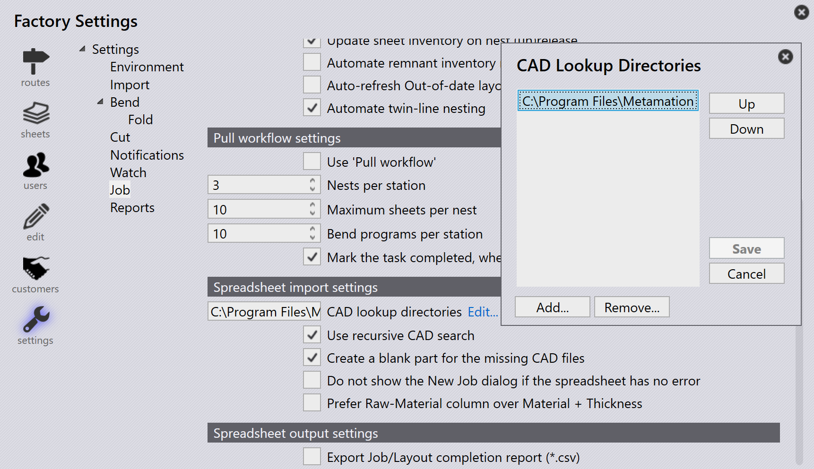

匯入工作
從 csv 或 xlsx 匯入
您也可以使用常見的文字格式匯入工作
-
按一下 File → Open → 匯入套裁，出現開啟資料夾對話方塊。選擇
C:\Program Files\Metamation\Praxis\Samples\Jobs\C0\C0.csv。
-
如果所有零件都存在於 csv 位置或查找資料夾目錄中，新套裁 視窗會出現，列出所有符合 csv 欄位的零件。
-
缺少的零件會被忽略，不會出現在 新套裁 視窗中。
-
最初零件狀態為雛形。

-
按一下 OK，現在零件已匯入零件資料庫。CAD 驗證、折彎和切割工具實例的工具處理已完成，可以在 Pmonitor 畫面中監控。

為缺少的 CAD 檔案建立一個板坏零件
當使用試算表（.csv 或 .xlsx）匯入工作時，您有時可能會有引用系統中不可用的 CAD 檔案的列。
-
要處理此問題，請轉到 工廠 → 設定 → 套裁，在 電子表格匯入 下啟用 為缺少的 CAD 檔案建立一個板坏零件

選擇此選項時：
-
如果在工作匯入期間任何列缺少 CAD 檔案，系統將自動建立空白零件以代替缺少的 CAD 檔案。
-
在 新套裁 視窗中，這些缺少的零件會以黃色視覺化反白顯示，以指示關聯的 CAD 檔案缺失。

-
缺少的零件仍將具有從 CSV 對應的欄位（如零件名稱、材料、厚度、數量等）。但是，其零件狀態將顯示為雛形，這意味著它只是一個空的佔位符，還沒有實際的幾何形狀。

這確保工作匯入仍然可以進行，而不會因缺少 CAD 檔案而出現錯誤 — 您可以稍後在可用時更新或替換空白零件為正確的 CAD 檔案。
如果電子表格沒有錯誤，則不要顯示「新套裁」對話方塊
工廠 → 設定 → 套裁 → 電子表格匯入→ 如果電子表格沒有錯誤，則不要顯示「新套裁」對話方塊
-
選擇此核取方塊時，如果試算表沒有錯誤（沒有缺少的零件、缺少的日期或無效的資料），系統會自動建立新工作而不顯示新工作對話方塊。
-
清除此核取方塊時，即使試算表沒有錯誤，新工作對話方塊也會始終出現以供使用者檢視和確認。
Prefer raw-material column over material + thickness
工廠 → 設定 → 套裁→Prefer Raw-Material column over Material + Thickness
-
選擇此核取方塊時，系統期望試算表使用原材料欄（例如 Steel-20）。這意味著材料類型和厚度應該在一個欄中組合成單一值。
-
清除此核取方塊時，系統期望試算表有單獨的材料和厚度欄（例如 Steel 和 2.00）。系統會在匯入期間在內部組合它們。

使用 CSV/XLSX 監看資料夾
-
在 工廠 → 設定→ 監視 中勾選 啟用「即時資料夾」 和 也監視子資料夾。
-
設定監看資料夾路徑（UNC 或對應的磁碟機）。
-
在 電子表格匯入 中，勾選 從「即時資料夾」匯入電子表格。

-
從試算表匯入選項中選擇 匯入套裁。
-
複製
C:\Program Files\Metamation\Praxis\Samples\Jobs\C0\C0.csv並將其貼到監看資料夾中。 -
系統檢查 CSV 並嘗試自動建立工作。
-
如果 CAD 檔案缺失，則不會建立工作，因為找不到所需的 CAD 資料。
CAD 查找目錄和遞迴 CAD 搜尋 - 未配置
-
在 工廠 → 設定 → 套裁 → 電子表格匯入 中，如果未設定 CAD lookup directories 且未使用 使用遞歸 CAD 搜尋，系統不會自動搜尋 CAD 檔案。
-
如果選擇了 為缺少的 CAD 檔案建立一個板坏零件 核取方塊，即使 CAD 檔案缺失，仍會建立工作。
-
在這種情況下，工作中的所有零件都將建立為雛形（空白）零件 — 這意味著它們沒有幾何形狀，因為找不到 CAD 檔案。

CAD 查找目錄和遞迴 CAD 搜尋 - 已配置
當在 工廠 → 設定 → 套裁 → 電子表格匯入 下將 CAD 查找目錄 設定為（C:\Program Files\Metamation\Praxis\Samples）並啟用 使用遞歸 CAD 搜尋 時：
-
系統會自動搜尋指定的資料夾及其所有子資料夾，尋找試算表中提到的所需 CAD 檔案。
-
為缺少的 CAD 檔案建立一個板坏零件 也已啟用，因此如果仍然找不到任何 CAD 檔案，系統將建立空白零件作為佔位符。
